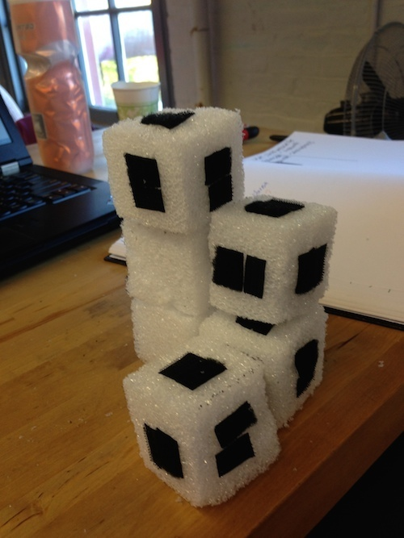
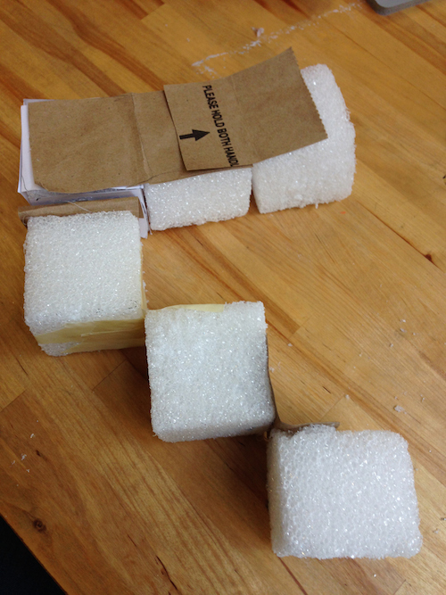
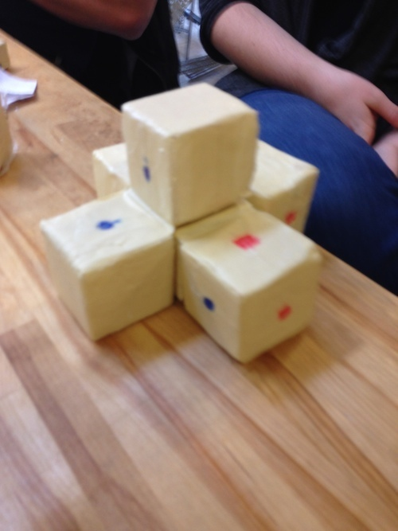
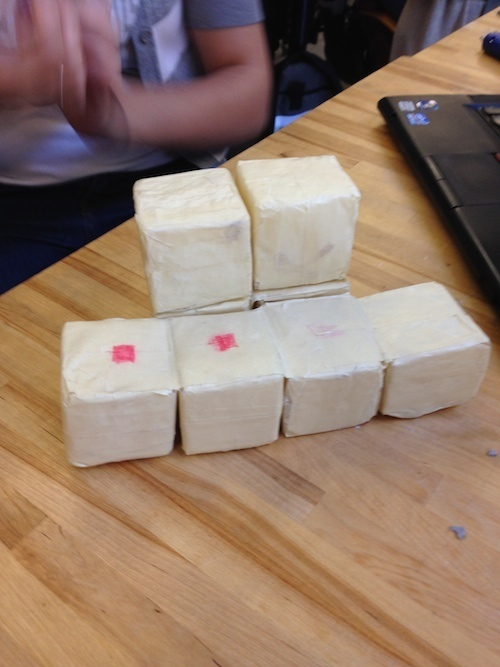
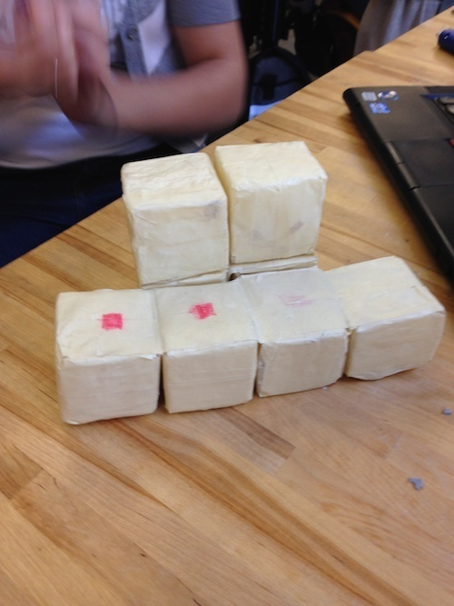

This is Kübu.
This is Kübu.

This is the evolution of Kübu.
Stage One: Quick Sketches.

Stage Two: Small-scale models to determine the best configuration. Progression from six individual cubes to eight interconnected blocks.
   

Stage Three: Large-scale Model.


Stage Four: User Testing.


Stage Five: CAD & Illustrator Renderings
.jpg)


Stage Six: Creation of the Final Product


Stage Seven: Final Prototype


Want to see more Kübu?

Kübu is interactive modular furniture designed specifically for children. I was inspired by memories of building forts as a kid and concern that so many children today are absorbed in technology, stuck in front of screens. I want to get kids up and using their imaginations.
Kübu is eight 12-inch interconnected blocks made from polystyrene core covered in rebonded foam and protected by vinyl. Vinyl makes the cubes durable and easy to clean.
It is designed to be lightweight and easy for kids to configure. It cannot stack higher than 3 blocks (3 feet) making it safe to climb. The shape can easily be folded back into a cube to be stored.
.JPG)
This project was completed as part of PDI Studio Three in Fall 2013. I collaborated with David Rosenberg, Selina Tedesco, and Andrea Ukleja.
Let me know what you think! Email me!